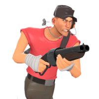
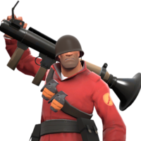
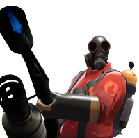
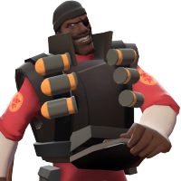
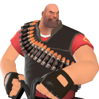
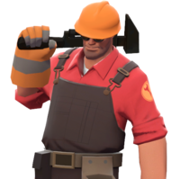
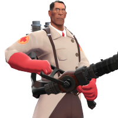
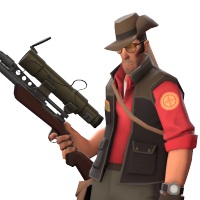
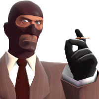

TF2 Has a total of 9 classes each meant to fulfill a couple roles distinct to them, but all falling into a category
of Offensive, Defensive, or Support.



Offensive
Offensive classes are the main damage dealing classes and are designed around getting
into contested areas and getting the drop on opposing players. If an Offensive class catches an enemy by surprise they will have
a large advantage in the ensuing fight, as they specialize in dealing large amounts of damage in short amounts of time. Naturally,
Offensive classes have few ways of healing or supporting themselves or others outside of dealing with enemies, and they are less effective
attacking head on or dealing with enemies aware of their presence.



Defensive
Defensive classes
focus on area denial and generally have tools that make them hard to approach directly if given time to build their defenses and prepare
themselves. If caught off gaurd however, their relatively slow playstyle means that they will be at a severe disadvantage in a fight, especially against
Offensive classes. Their overall slow speed means that they aren't as fast or good at getting into contested areas compared to offensive classes, but once they
get the time to set up they can be offensively very powerful as well.



Support
Support classes, in exchange for lacking a direct role in combat, are able
to help their team in indirect ways, either by picking off high-value targets (such as enemy Medics or Heavies) or supporting their teammates in a firefight
with their nonprimary weapons. In exchange for some unique and powerful abilities, Support classes can be virtually worthless outside of their preferred
environment and rely heavily on their team to help keep attention off of them so they can work on their terms.
Players in TF2 are divided into the teams of RED (Reliable Excavation and Demolition) and BLU (Builder's League United).
Regardless of whether the match is taking place on a mirrored map where each team has virtually the same layout for their base ( usually seen
on Capture The Flag and Capture Point maps such as CTF_2fort or CP_Badlands) or an uneven layout (Seen in Gamemodes such as Payload), RED team
bases generally feature wood,sharp angles and the color red in their battlements and buildings while BLU prefers rounded corners, metal, and the color blue.
Neutral elements (such as battlegrounds in area between two bases,uncontrolled points, and elements in a map that can hurt both teams) are generally gray or orange.
Gravel Pit

Gravel pit is a 3 point Control Point map, where BLU must take over all 3 of RED's control points to win, and RED wins by making sure at least one point
stays in their control until time runs out. BLU gets more time by capturing a point, and the last point(C) cannot be captured until the first two (A,B) are.
RED cannot recapture their points, meaning once they are taken they must move their defenses quickly and regroup to avoid a run-away victory for BLU. The official
commentary below talks about the design for several classes in TF2, as well as well as some gameplay elements like Ubercharge.
Hydro

Hydro is unique in that it is the only official map in the Territory Control gamemode. Hydro is actually 5 small maps featuring a lot of verticality, with each
team getting one control point per map. Capturing a team's control point forces that team back and changes the map, until a team is pushed back to their base. If the enemy
team captures the point in the opponent's base, that team wins the entire match. The official commentary for Hydro discusses several of the art decisions made during develpoment, especially
map design.
Well

Well is a 5 point Control Point map with each team having 2 points and a neutral point in the middle. For a team to win, they must capture and own all points in order
(for example, you can't capture the middle point and then capture the enemy's base to win). This means that teams need to adjust from offensive to defensive and vice versa
as the situation demands when they lose or gain a capture point. The developer commentary for Well discusses some of the technical art design that went into TF2 and its classes,
as well as HUD elements and lighting.